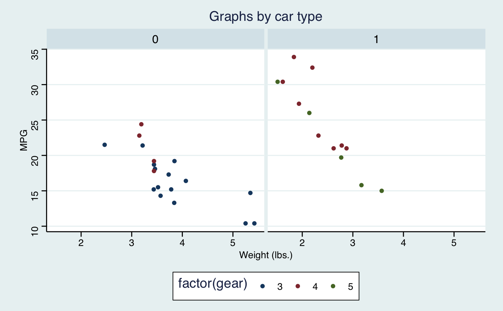
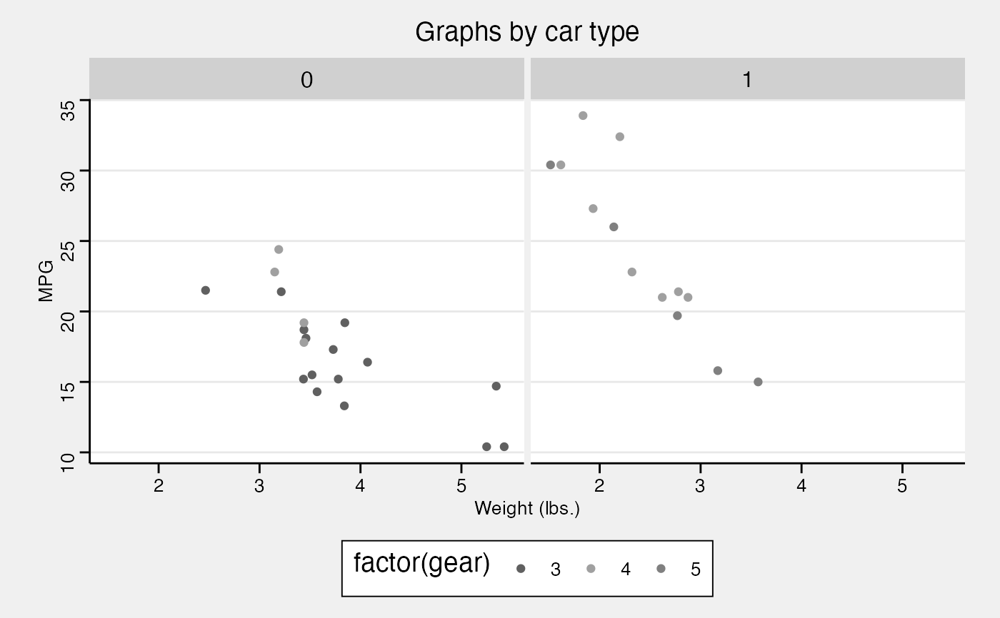
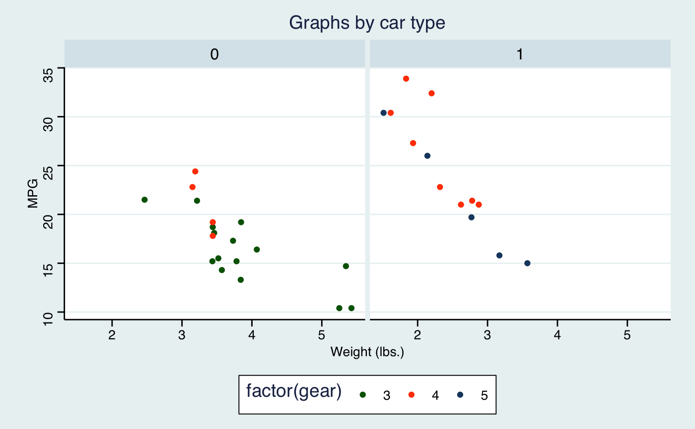
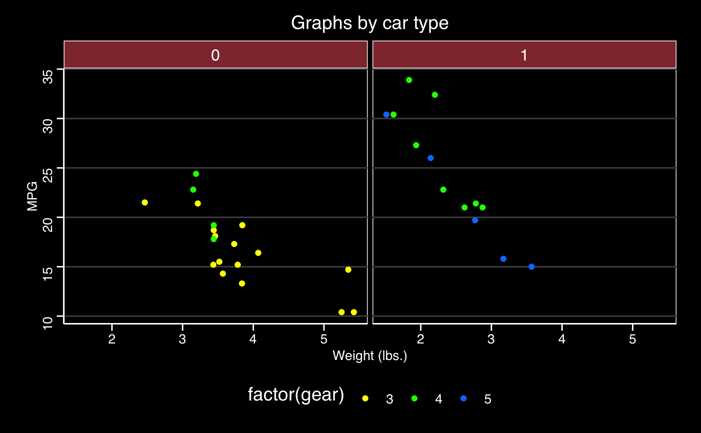
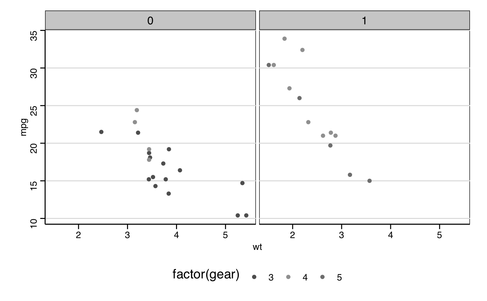

Themes based on Stata graph schemes
theme_stata(base_size = 11, base_family = "sans", scheme = "s2color")
| base_size | base font size |
|---|---|
| base_family | base font family |
| scheme | One of "s2color", "s2mono", "s1color", "s1rcolor", or "s1mono", "s2manual", "s1manual", or "sj" |
These themes approximate Stata schemes using the features ggplot2. The graphical models of Stata and ggplot2 differ in various ways that make an exact replication impossible (or more difficult than it is worth). Some features in Stata schemes not in ggplot2: defaults for specific graph types, different levels of titles, captions and notes. These themes also adopt some of the ggplot2 defaults, and more effort was made to match the colors and sizes of major elements than in matching the margins.
http://www.stata.com/help.cgi?schemes
library("ggplot2") p <- ggplot(mtcars) + geom_point(aes(x = wt, y = mpg, colour = factor(gear))) + facet_wrap(~ am) + labs(title = "Graphs by car type", x = "Weight (lbs.)", y = "MPG") # s2color p + theme_stata() + scale_colour_stata("s2color")